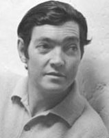

(1914 –1984)

Öncüsü olduğu "Güney Amerikan Baharı" ile kendisinden sonra gelen yazarları özgür düşünceli olma konusunda yüreklendiren Julio Cortazar romanlarının yanı sıra ünlü İtalyan yönetmen Michelangelo Antonioni tarafından 1967 yılında Cinayeti Gördüm adıyla sinemaya uyarlanan Şeytanın Ağları adlı öyküsüyle de geniş kitlelere ulaşmış yazarlardan biridir.
Tam adı Julio Florencio Cortazar olan ünlü Arjantinli yazar Julio Cortazar (okunuşu: Hulyo Kortazar), 26 Ağustos 1914 günü Belçika'nın başkenti Brüksel'de dünyaya geldi. Annesi Maria Herminia Descotte ve babası Julio Jose Cortazar 1913 yılında memleketleri Arjantin'den Belçika'ya göç etmişlerdi. Julio'nun doğduğu günlerde Belçika, başında Kayzer II. Wilhelm'in bulunduğu Alman ordularının işgalinde olduğu için aile kısa süre sonra İsviçre'nin Zürih kentine, Julio'nun anneannesinin ve dedesinin evine taşındı. Bir süre daha Avrupa'da gezen Cortazar ailesi, 1919 yılı sonunda memleketlerine dönüp başkent Buenos Aires'e yerleşti.
Cortazar, 18 yaşına gelince ilkokul öğretmenliği yapmaya başladı ve sonradan bitirmemiş olsa da Buenos Aires Üniversitesi'nde Felsefe ve Dilbilim okudu. Öğretmenliğe devam etmekte olan yazar, 1938 yılında Julio Denis takma adıyla, sonelerden oluşan bir şiir kitabı yayımladı. 1944 yılında Cuvo Üniversitesi'nde Fransız edebiyatı hocası olan Cortazar, 1949 yılında da "Teseus ve Minotor" efsanesini konu alan Kral adında bir oyun yazdı.
Aşırı sağcı Juan Peron yönetiminden hiç hoşnut olmayan Julio Cortazar, 1951 yılında Fransa'ya göç edip ömrünün sonuna kadar orada çalıştı ve yaşadı. 1952'den sonra ise çevirmen olarak UNESCO bünyesinde görev aldı. O dönemde birçok çeviri projesi üzerinde çalışan yazar, aynı zamanda Güney Amerika ülkelerinde yaşanan insan hakları ihlallerine karşı uluslararası bir tepki oluşturmak için yoğun olarak çalıştı.
Üç kez evlenen Julio Cortazar 1984 yılında, lösemiden dolayı Paris'te öldü ve Montparnasse Mezarlığı'na gömüldü.
Romanlarının yanı sıra öyküler de yayımlatan Cortazar'ın en ünlü öyküsü, 1967 yılında yönetmen Michelangelo Antonioni tarafından Blow Up (Cinayeti Gördüm) adıyla sinemaya da uyarlanan Droolings of the Devil'dır. Cortazar'ın aynı yıllarda yazdığı Güney Otoyolu adlı öykü de yönetmen Jean-Luc Godard'ın Hafta Sonu adlı filmine kaynaklık etmiştir.
Julio Cortazar'ın romanları arasında; Kazananlar (1963), Seksek (1963), Rayuela (1966), 62: Maket Seti (1968) ve Açıklayıcı Bilgiler El Kitabı (1973) sayılabilir. Bu romanlardan özellikle Seksek, farklı kurgusal yapısı ile Cortazar'dan sonraki birçok Güney Amerikalı yazara esin kaynağa olmuştur. Seksek, birden fazla okunma yöntemi ile bugün internet ortamında kullanılan "hypertext" teknolojisinin kullanıldığı ilk roman örneğidir. Cortazar, 155 bölümden oluşan kitabın ilk 56 bölümünü bitirdikten sonra okurun kalan bölümleri okumadan kitabı gönül rahatlığıyla bırakabileceğini söylemiştir. Diğer bir doğrusal olmayan okuma biçimi ise 73. bölümden başlayarak yazarın öngördüğü bir çizelgeyi izleyerek okumak. Bu okuma şeklinde, her bölümünün sonunda bir sonraki bölümün numarası verilerek yazar sizi okuduğunuz bölümden yeni bir bölüme yönlendirmektedir. Okur, bir bölümden diğerine seksek misali atlayıp zıplayarak kitabı okuyor. Bu arada Cortazar size tuzaklar hazırlamaktadır. 82'ye yönlendirmektedir ama ortada 82 yoktur. 81. bölüm ise iki tanedir. Her seçim sizi başka alanlara götürmektedir. En son bölüm ise sizi kitabın başına değil 123. bölüme, oradan 58'e ve sonra yine 123'e gönderdiği için Cortazar belki de sizi, bir çıkış yolu olmayan seksek kareleri içine hapsetmektedir.
Yazarın öncülük yaptığı "Güney Amerikan Baharı" adlı serbest düşünce yanlısı akım da hem Güney Amerika'da hem de ABD'de birçok yazarı etkilemiştir. Cortazar'ın yazma tekniğinin en belirgin özelliği olan ve uzun iç konuşmalarla kendini gösteren "bilinç akışı" tekniği, yazarın en etkilendiği romancı olan James Joyce'tan esinlenilmiş bir yapıdır.
Seçme Romanları: Oyunun Sonu (1956), Gizli Hava Müzesi (1959), 62 Maket Seti (1968), Cinayeti Gördüm (1968 – Can Yayınları, 2009), Son Raunt (1968), Açıklayıcı Bilgiler El Kitabı (1973), Lucas Diye Biri (1979), Seksek (1963 – Yapı Kredi Yayınları, 2009), Güney Otoyolu; Mırıldandığım Öyküler (Can Yayınları, 2010)